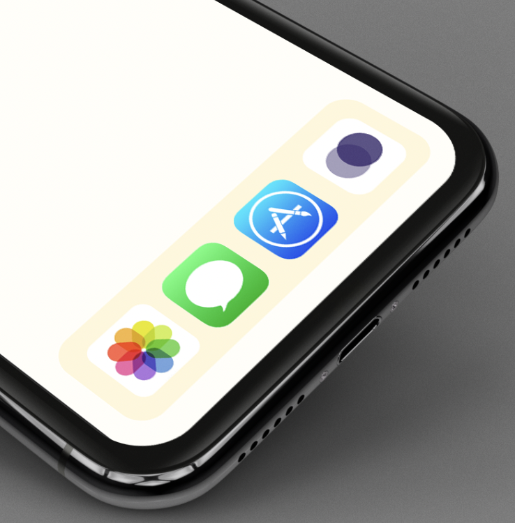

Problem
Balancing schoolwork and social life as a CUNY student can be challenging, especially with busy schedules, long commutes, part-time jobs, and extracurricular activities. The core issue is how to manage time effectively, maintain academic performance, and still have opportunities to socialize and maintain mental health. Many students struggle to find a balance, leading to burnout, stress, or academic decline if one aspect is prioritized over the other.
Interview Results
All individuals have busy morning routines, focusing on getting ready quickly and leaving for their commitments. They prioritize basic tasks like waking up, brushing teeth, and showering.
Each person experiences busy or productive days, resulting in minimal routines before bed.
All individuals experience stress related to academic responsibilities, such as assignments, lack of time, or resources.
Each individual acknowledges the importance of self-care but struggles to prioritize.
Non of the participants have used any apps or products
They all struggle with time management, particularly balancing academic or work commitments with self-care practices.

CCNY BALANCE
CCNY Balance allows students to connect with each other while maintaining a healthy balance between academics and social life